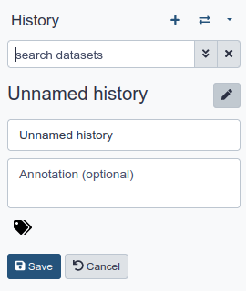

<!doctype html>
<html lang="en">
    <head>
        <meta charset="utf-8">
        <meta http-equiv="x-ua-compatible" content="ie=edge">
        <meta name="viewport" content="width=device-width, initial-scale=1, shrink-to-fit=no">
        <title>Introduction to Genomics and Galaxy</title>
        
            <script async defer data-domain="training.galaxyproject.org" src="https://plausible.galaxyproject.eu/js/plausible.js"></script>

        
        <link rel="stylesheet" href="/training-material/assets/css/bootstrap.min.css?v=3">
        <link rel="stylesheet" href="/training-material/assets/css/bootstrap-toc.min.css">
        <link rel="stylesheet" href="/training-material/assets/css/main.css?v=2">
        <script src="https://kit.fontawesome.com/67b3f98409.js" crossorigin="anonymous"></script>
        <link rel="stylesheet" href="/training-material/assets/css/academicons.css">
        <link rel="stylesheet" href="/training-material/assets/css/syntax_highlighting.css">
        <link rel="shortcut icon" href="/training-material/favicon.ico" type="image/x-icon" />
        <link rel="alternate" type="application/atom+xml" href="/training-material/feed.xml" />

        
        
        
        
        
        <meta name="description" content="Galaxy is a scientific workflow, data integration, and da..." />
        <meta property="og:title" content="Galaxy Training: Introduction to Genomics and Galaxy" />
        <meta property="og:description" content="Galaxy is a scientific workflow, data integration, and da..." />
        <meta property="og:image" content="/training-material/assets/images/GTNLogo1000.png" />
    </head>
    <body data-spy="scroll" data-target="#toc">
        <header>
    <nav class="navbar navbar-expand-md navbar-dark" aria-label="Site Navigation">
        <div class="container">
            <a class="navbar-brand" href="/training-material/">
                
                Galaxy Training!
            </a>

            <button class="navbar-toggler navbar-toggler-right" type="button" data-toggle="collapse" data-target="#top-navbar" aria-controls="top-navbar" aria-expanded="false" aria-label="Toggle navigation">
                <span class="navbar-toggler-icon"></span>
            </button>
            <div class="collapse navbar-collapse" id="top-navbar">
                <ul class="navbar-nav">
                    <li class="nav-item">
                        
                        <a class="nav-link" href="/training-material/topics/introduction" title="Go back to list of tutorials">
                            <i class="far fa-folder" aria-hidden="true"></i> Introduction to Galaxy Analyses
                        </a>
                        
                    </li>

                    <li class="nav-item dropdown">
                        <a href="#" class="nav-link dropdown-toggle" data-toggle="dropdown" aria-expanded="false" title="Languages">
                            <i class="fas fa-language" aria-hidden="true"></i><span class="visually-hidden">language</span> Languages
                        </a>
                        <div class="dropdown-menu dropdown-menu-right">
                            
                              <strong class="dropdown-header">Automatic Translations</strong>
            
            <a class="dropdown-item" href="https://translate.google.com/translate?hl=jp&sl=en&tl=fr&u=https%3A%2F%2Ftraining.galaxyproject.org/topics/introduction/tutorials/galaxy-intro-strands/tutorial.html&edit-text=&act=url">
                            Français
                            </a>
                            
            <a class="dropdown-item" href="https://translate.google.com/translate?hl=jp&sl=en&tl=ja&u=https%3A%2F%2Ftraining.galaxyproject.org/topics/introduction/tutorials/galaxy-intro-strands/tutorial.html&edit-text=&act=url">
                            日本語
                            </a>
                            
            <a class="dropdown-item" href="https://translate.google.com/translate?hl=jp&sl=en&tl=es&u=https%3A%2F%2Ftraining.galaxyproject.org/topics/introduction/tutorials/galaxy-intro-strands/tutorial.html&edit-text=&act=url">
                            Español
                            </a>
                            
            <a class="dropdown-item" href="https://translate.google.com/translate?hl=jp&sl=en&tl=pt&u=https%3A%2F%2Ftraining.galaxyproject.org/topics/introduction/tutorials/galaxy-intro-strands/tutorial.html&edit-text=&act=url">
                            Português
                            </a>
                            
            <a class="dropdown-item" href="https://translate.google.com/translate?hl=jp&sl=en&tl=ar&u=https%3A%2F%2Ftraining.galaxyproject.org/topics/introduction/tutorials/galaxy-intro-strands/tutorial.html&edit-text=&act=url">
                            العربية
                            </a>
                            
                            <a class="dropdown-item" href="https://translate.google.com/translate?hl=jp&sl=en&tl=&u=https%3A%2F%2Ftraining.galaxyproject.org/topics/introduction/tutorials/galaxy-intro-strands/tutorial.html&edit-text=&act=url" title="">
                            And more!
                            </a>
                        </div>
                    </li>

                    <li class="nav-item dropdown">
    <a href="#" class="nav-link dropdown-toggle" data-toggle="dropdown" aria-expanded="false" title="Help">
        <i class="far fa-question-circle" aria-hidden="true"></i><span class="visually-hidden">help</span> Help
    </a>
    <div class="dropdown-menu dropdown-menu-right">
        <!-- disable Tess for now
        <form method="get" action="https://tess.elixir-europe.org/materials">
            <input type="text" id="search" name="q" value="" style="margin-left: 0.5em;/*! border-radius: 0px; */">
            <input type="hidden" value="Galaxy Training" name="content_provider">
            <input type="submit" value="Search on TeSS" style="width: 92%;border-radius: 0px;margin: 0.5em;background: #f47d20;border: 0px;padding: 0.25em;" class="">
        </form>
        -->

        <a class="dropdown-item" href="/training-material/faq" title="Check our FAQs">
           <i class="far fa-question-circle" aria-hidden="true"></i><span class="visually-hidden">question</span> FAQs
        </a>
        
        <a class="dropdown-item" href="/training-material/topics/introduction/faqs/" title="Check our FAQs for the Introduction to Galaxy Analyses topic">
           <i class="far fa-question-circle" aria-hidden="true"></i><span class="visually-hidden">question</span> Topic FAQs
        </a>
        
        <a class="dropdown-item" href="https://help.galaxyproject.org/" title="Discuss on Galaxy Help">
            <i class="far fa-comments" aria-hidden="true"></i><span class="visually-hidden">feedback</span> Galaxy Help Forum
        </a>
        <a class="dropdown-item" href="https://gitter.im/Galaxy-Training-Network/Lobby" title="Discuss on gitter">
           <i class="fab fa-gitter" aria-hidden="true"></i><span class="visually-hidden">gitter</span> Discuss on Gitter
        </a>
    </div>
</li>


                    <li class="nav-item dropdown">
    <a href="#" class="nav-link dropdown-toggle" data-toggle="dropdown" aria-expanded="false" title="Extras">
        <i class="far fa-star" aria-hidden="true"></i><span class="visually-hidden">galaxy-star</span> Extras
    </a>
    <div class="dropdown-menu dropdown-menu-right">

        
        <a class="dropdown-item" href="https://github.com/galaxyproject/training-material/edit/main/topics/introduction/tutorials/galaxy-intro-strands/tutorial.md" title="Edit on GitHub">
          <i class="fab fa-github" aria-hidden="true"></i><span class="visually-hidden">github</span> Edit on GitHub
        </a>

        <a class="dropdown-item" href="/training-material/stats.html" title="Show view statistics about this repository">
            <i class="fas fa-chart-bar" aria-hidden="true"></i><span class="visually-hidden">galaxy-barchart</span> GTN statistics
        </a>

        <a class="dropdown-item" href="https://plausible.galaxyproject.eu/training.galaxyproject.org?period=12mo&page=/training-material/topics/introduction/tutorials/galaxy-intro-strands/tutorial.html" title="Show view statistics of this page">
            <i class="fas fa-chart-bar" aria-hidden="true"></i><span class="visually-hidden">galaxy-barchart</span> Page Metrics
        </a>

        
            <a class="dropdown-item" href="/training-material/feedback.html" title="Show feedback statistics about this repository">
                <i class="fas fa-chart-bar" aria-hidden="true"></i><span class="visually-hidden">galaxy-barchart</span> GTN feedback
            </a>
        

        <div class="dropdown-item">
            <div>
                <i class="fas fa-palette" aria-hidden="true"></i><span class="visually-hidden">gtn-theme</span> Theme
            </div>

            <div id="theme-selector" data-toggle="buttons">
                <label data-value="default" class="btn btn-secondary">
                    <input type="radio" name="options" id="default" autocomplete="off"> Default
                </label>
                <label data-value="night" class="btn btn-secondary">
                    <input type="radio" name="options" id="night" autocomplete="off"> Night
                </label>
                <label data-value="midnight" class="btn btn-secondary">
                    <input type="radio" name="options" id="midnight" autocomplete="off"> Midnight
                </label>
                <label data-value="rainbow" class="btn btn-secondary">
                    <input type="radio" name="options" id="rainbow" autocomplete="off"> Rainbow
                </label>
                <label data-value="progress" class="btn btn-secondary">
                    <input type="radio" name="options" id="progress" autocomplete="off">🏳️‍🌈
                </label>
                <label data-value="halloween" class="btn btn-secondary">
                    <input type="radio" name="options" id="halloween" autocomplete="off"> 🎃
                </label>
                <label data-value="straya" class="btn btn-secondary">
                    <input type="radio" name="options" id="downunder" autocomplete="off"> 🇦🇺
                </label>
            </div>

        </div>

        <div class="dropdown-item">
            <div>
                <i class="fas fa-history" aria-hidden="true"></i><span class="visually-hidden">galaxy-rulebuilder-history</span> Previous Versions
            </div>

            
            <div id="archive-selector">
            
                <a class="btn btn-warning" href="https://training.galaxyproject.org/archive/2022-03-01/topics/introduction/tutorials/galaxy-intro-strands/tutorial.html" title="Version 2022-03-01">2022-03-01</a>
            
                <a class="btn btn-warning" href="https://training.galaxyproject.org/archive/2022-02-01/topics/introduction/tutorials/galaxy-intro-strands/tutorial.html" title="Version 2022-02-01">2022-02-01</a>
            
                <a class="btn btn-warning" href="https://training.galaxyproject.org/archive/2022-01-01/topics/introduction/tutorials/galaxy-intro-strands/tutorial.html" title="Version 2022-01-01">2022-01-01</a>
            
                <a class="btn btn-warning" href="https://training.galaxyproject.org/archive/" title="Older Versions">Older Versions</a>
            </div>

        </div>

    </div>
</li>


                    <!-- Search bar-->
                    <li class="nav-item">
                      <div id="navbarSupportedContent" role="search">
                        <!-- Search form -->
                        <form class="form-inline mr-auto" method="GET" action="/training-material/search">
                          <i class="fas fa-search nav-link" aria-hidden="true"></i>
                          <div class="md-form mb-2">
                            <input name="query" class="form-control nicer" type="text" placeholder="Search Tutorials" aria-label="Search">
                          </div>
                        </form>
                      </div>
                    </li>
                </ul>
            </div>
        </div>
    </nav>
</header>

        <div class="container main-content" role="main">
        


<!-- Gitter -->


<script>
  ((window.gitter = {}).chat = {}).options = {
  room: 'Galaxy-Training-Network/Lobby'
  };
</script>
<script src="https://sidecar.gitter.im/dist/sidecar.v1.js" async defer></script>

<script type="application/ld+json">
    


{
  "@context": "http://schema.org",
  "@type": "Course",
  "accessMode": [
    "textual",
    "visual"
  ],
  "accessModeSufficient": [
    "textual",
    "visual"
  ],
  "accessibilityControl": [
    "fullKeyboardControl",
    "fullMouseControl"
  ],
  "accessibilityFeature": [
    "alternativeText",
    "tableOfContents"
  ],
  "accessibilitySummary": "Short descriptions are present but long descriptions will be needed for non-visual users",
  "audience": {
    "@type": "EducationalAudience",
    "educationalRole": "students"
  },
  "citation": {
    "@type": "CreativeWork",
    "name": "Community-Driven Data Analysis Training for Biology",
    "url": "https://doi.org/10.1016/j.cels.2018.05.012"
  },
  "copyrightHolder": {
    "@type": "Organization",
    "email": "galaxytrainingnetwork@gmail.com",
    "name": "Galaxy Training Network",
    "url": "https://galaxyproject.org/teach/gtn/"
  },
  "dateModified": "1970-01-01 00:00:25 +0000",
  "discussionUrl": "https://gitter.im/Galaxy-Training-Network/Lobby",
  "headline": "Introduction to Genomics and Galaxy",
  "interactivityType": "mixed",
  "isAccessibleForFree": true,
  "isFamilyFriendly": true,
  "license": "https://spdx.org/licenses/CC-BY-4.0.html",
  "producer": {
    "@type": "Organization",
    "email": "galaxytrainingnetwork@gmail.com",
    "name": "Galaxy Training Network",
    "url": "https://galaxyproject.org/teach/gtn/"
  },
  "provider": {
    "@type": "Organization",
    "email": "galaxytrainingnetwork@gmail.com",
    "name": "Galaxy Training Network",
    "url": "https://galaxyproject.org/teach/gtn/"
  },
  "sourceOrganization": {
    "@type": "Organization",
    "email": "galaxytrainingnetwork@gmail.com",
    "name": "Galaxy Training Network",
    "url": "https://galaxyproject.org/teach/gtn/"
  },
  "isPartOf": {
    "@type": "CreativeWork",
    "name": "Introduction to Galaxy Analyses",
    "description": "Galaxy is a scientific workflow, data integration, and data and analysis persistence and publishing platform that aims to make computational biology accessible to research scientists that do not have computer programming experience. ",
    "url": "https://training.galaxyproject.org//training-material/topics/introduction/"
  },
  "courseCode": "introduction / galaxy-intro-strands / hands-on",
  "learningResourceType": "hands-on tutorial",
  "name": "Hands-on for 'Introduction to Genomics and Galaxy' tutorial",
  "url": "https://training.galaxyproject.org//training-material/topics/introduction/tutorials/galaxy-intro-strands/tutorial.html",
  "timeRequired": "PT2H30M",
  "description": "The questions this  addresses are:\n - Do genes on opposite strands ever overlap?  If so, how often?\n\n\\nThe objectives are:\n - Learn some of the basic concepts of genomics and bioinformatics\n - Familiarize yourself with the basics of Galaxy\n\n",
  "inLanguage": {
    "@type": "Language",
    "name": "English",
    "alternateName": "en"
  },
  "hasPart": [

  ],
  "author": [
    {
      "@type": "Person",
      "name": "Dave Clements"
    },
    {
      "@type": "Person",
      "name": "Cristóbal Gallardo"
    }
  ],
  "contributor": [
    {
      "@type": "Person",
      "name": "Dave Clements"
    },
    {
      "@type": "Person",
      "name": "Cristóbal Gallardo"
    }
  ],
  "about": [
    {
      "@type": "CreativeWork",
      "name": "Introduction to Galaxy Analyses",
      "description": "Galaxy is a scientific workflow, data integration, and data and analysis persistence and publishing platform that aims to make computational biology accessible to research scientists that do not have computer programming experience. ",
      "url": "https://training.galaxyproject.org//training-material/topics/introduction/"
    }
  ],
  "skillLevel": "Introductory"
}
</script>

<section class="tutorial topic-introduction">
    <h1 data-toc-skip>Introduction to Genomics and Galaxy</h1>
    


    <div class="contributors-line">Authors: 
<a href="/training-material/hall-of-fame/tnabtaf/" class="contributor-badge contributor-tnabtaf">Dave Clements</a>


<a href="/training-material/hall-of-fame/gallardoalba/" class="contributor-badge contributor-gallardoalba">Cristóbal Gallardo</a>


<a href="https://training.galaxyproject.org/contributing/" class="contributor-badge contributor-newcontributors"><i class="fas fa-users" aria-hidden="true"></i><span class="visually-hidden">hall-of-fame</span>Add Contributions!</a>

</div>


    <blockquote class="overview">
        <h3>Overview</h3>
        
        
        
        <strong><i class="far fa-question-circle" aria-hidden="true"></i> Questions:</strong>
        <ul>
        
        <li><p>Do genes on opposite strands ever overlap?  If so, how often?</p>
</
        </ul>

        <strong><i class="fas fa-bullseye" aria-hidden="true"></i> Objectives: </strong>
        <ul>
        
        <li><p>Learn some of the basic concepts of genomics and bioinformatics</p>
</
        <li><p>Familiarize yourself with the basics of Galaxy</p>
</li>
        
        </ul>

        

        
        <div><strong><i class="fas fa-hourglass-half" aria-hidden="true"></i> Time estimation:</strong> 2 hours 30 minutes</div>
        

        
        <div><strong><i class="fas fa-graduation-cap" aria-hidden="true"></i> Level: </strong>
        


 Introductory <span class="visually-hidden">Introductory</span>
<span class="level introductory" title="Introductory Tutorial">
  <i class="fas fa-graduation-cap" aria-hidden="true"></i> <i class="fas fa-graduation-cap" aria-hidden="true"></i> <i class="fas fa-graduation-cap" aria-hidden="true"></i>
</span>

</div>
        

        
        

        
        <div id="supporting-materials"><strong><i class="fa fa-external-link" aria-hidden="true"></i> Supporting Materials:</strong></div>
        <ul class="supporting_material">
            
                <li class="btn btn-default supporting_material"><a href="/training-material/topics/introduction/slides/introduction.html" title="Topic Overview slides">
                    <i class="fab fa-slideshare" aria-hidden="true"></i> Topic Overview slidesnk will be able to a></li>
            

            

            
                <li class="btn btn-default supporting_material">


    <a class="topic-icon" href="/training-material/topics/introduction/tutorials/galaxy-intro-strands/workflows/" title="Workflows" alt="Introduction to Genomics and Galaxy workflows">
        <i class="fas fa-share-alt" aria-hidden="true"></i> Workflows
    </a>

</li>
            

            

            

            
            
            
                 <li class="btn btn-default supporting_material">
    <a class="topic-icon" href="/training-material/topics/introduction/tutorials/galaxy-intro-strands/faqs/" title="Frequently Asked Questions" alt="Tutorial FAQs">
        <i class="far fa-question-circle" aria-hidden="true"></i> FAQs
    </a>
  </li>


            

            <!-- Check the GTN Video Library for recordings of this tutorial or associated slides -->
            


  


            
                <li class="btn btn-default supporting_material">


    <a href="#" class="btn btn-default dropdown-toggle topic-icon" data-toggle="dropdown" aria-expanded="false" title="Where to run the tutorial">
        <i class="fas fa-globe" aria-hidden="true"></i><span class="visually-hidden">instances</span> Available on these Galaxies 
    </a>
    <ul class="dropdown-menu">
    
        <li>
            <a class="dropdown-item" href="https://github.com/galaxyproject/training-material/tree/main/topics/introduction/docker" title="Docker image for this tutorial">
                <i class="fab fa-docker" aria-hidden="true"></i><span class="visually-hidden">docker_image</span> Docker image
            </a>
        </li>
    
    
        
    
        
    
        
    
        
    
        
    
        
    
        
    
        
        <a class="dropdown-item" href="https://clipseq.usegalaxy.eu/" title="CLIP-Explorer">
            CLIP-Explorer
        </a>
        
    
        
    
        
    
        
        <a class="dropdown-item" href="https://cheminformatics.usegalaxy.eu/" title="ChemicalToolbox">
            ChemicalToolbox
        </a>
        
    
        
        <a class="dropdown-item" href="https://climate.usegalaxy.eu/" title="Climate Science Workbench">
            Climate Science Workbench
        </a>
        
    
        
    
        
    
        
    
        
    
        
    
        
    
        
    
        
        <a class="dropdown-item" href="https://africa.usegalaxy.eu/" title="Galaxy Africa">
            Galaxy Africa
        </a>
        
    
        
        <a class="dropdown-item" href="https://india.usegalaxy.eu/" title="Galaxy India">
            Galaxy India
        </a>
        
    
        
    
        
        <a class="dropdown-item" href="https://test.galaxyproject.org/" title="Galaxy Test">
            Galaxy Test
        </a>
        
    
        
        <a class="dropdown-item" href="https://ecology.usegalaxy.eu/" title="Galaxy for Ecology">
            Galaxy for Ecology
        </a>
        
    
        
    
        
        <a class="dropdown-item" href="https://galaxy.genouest.org" title="Galaxy@GenOuest">
            Galaxy@GenOuest
        </a>
        
    
        
    
        
    
        
    
        
    
        
        <a class="dropdown-item" href="https://hicexplorer.usegalaxy.eu" title="HiCExplorer">
            HiCExplorer
        </a>
        
    
        
        <a class="dropdown-item" href="https://humancellatlas.usegalaxy.eu/" title="Human Cell Atlas">
            Human Cell Atlas
        </a>
        
    
        
    
        
    
        
    
        
    
        
    
        
    
        
    
        
        <a class="dropdown-item" href="https://ml.usegalaxy.eu/" title="Machine Learning Workbench">
            Machine Learning Workbench
        </a>
        
    
        
    
        
        <a class="dropdown-item" href="https://metabolomics.usegalaxy.eu/" title="Metabolomics">
            Metabolomics
        </a>
        
    
        
        <a class="dropdown-item" href="https://metagenomics.usegalaxy.eu/" title="Metagenomics">
            Metagenomics
        </a>
        
    
        
    
        
    
        
        <a class="dropdown-item" href="https://nanopore.usegalaxy.eu/" title="NanoGalaxy">
            NanoGalaxy
        </a>
        
    
        
    
        
    
        
    
        
    
        
        <a class="dropdown-item" href="https://plants.usegalaxy.eu/" title="Plant Anaylsis Workbench">
            Plant Anaylsis Workbench
        </a>
        
    
        
    
        
    
        
        <a class="dropdown-item" href="https://singlecell.usegalaxy.eu/" title="Single Cell Omics workbench">
            Single Cell Omics workbench
        </a>
        
    
        
        <a class="dropdown-item" href="https://streetscience.usegalaxy.eu/" title="Street Science">
            Street Science
        </a>
        
    
        
        <a class="dropdown-item" href="https://usegalaxy.be/" title="UseGalaxy.be">
            UseGalaxy.be
        </a>
        
    
        
        <a class="dropdown-item" href="https://usegalaxy.eu" title="UseGalaxy.eu">
            UseGalaxy.eu
        </a>
        
    
        
        <a class="dropdown-item" href="https://usegalaxy.fr/" title="UseGalaxy.fr">
            UseGalaxy.fr
        </a>
        
    
        
        <a class="dropdown-item" href="https://usegalaxy.no/" title="UseGalaxy.no">
            UseGalaxy.no
        </a>
        
    
        
        <a class="dropdown-item" href="https://usegalaxy.org" title="UseGalaxy.org (Main)">
            UseGalaxy.org (Main)
        </a>
        
    
        
        <a class="dropdown-item" href="https://usegalaxy.org.au" title="UseGalaxy.org.au">
            UseGalaxy.org.au
        </a>
        
    
        
    
        
    
        
        <a class="dropdown-item" href="https://virology.usegalaxy.eu/" title="Virology">
            Virology
        </a>
        
    
        
    
    </ul>


</li>
            
        </ul>
        

        <div><strong><i class="far fa-calendar" aria-hidden="true"></i> Last modification:</strong> Feb 25, 2022 </div>
        <div><strong><i class="fas fa-balance-scale" aria-hidden="true"></i> License:</strong>
            
            <a rel="license" href="http://creativecommons.org/licenses/by/4.0/">Tutorial Content is licensed under Creative Commons Attribution 4.0 International License</a>
            
            <a rel="license" href="https://github.com/galaxyproject/training-material/blob/main/LICENSE.md">The GTN Framework is licensed under MIT</a>
        </div>
    </blockquote>

    <div class="container">
        <div class="row">
            <!-- sidebar, which will move to the top on a small screen -->
            <div class="col-sm-2">
                <nav id="toc" data-toggle="toc" class="sticky-top" aria-label="Table of Contents"></nav>
            </div>
            <div class="col-sm-10">
                 

                <h1 class="no_toc" id="introduction-to-galaxy">Introduction to <span class="notranslate">Galaxy</span></h1>

<p>This practical aims to familiarize you with the <span class="notranslate">Galaxy</span> user interface. It will teach you how to perform basic tasks such as importing data, running tools, working with histories, creating workflows, and sharing your work.</p>

<blockquote class="comment">
  r distribution aaudiencesome additional chaK. Gardner <i>et al.</i>, 2012 <b>The Histone Acetyltransferase MOF Is a Key Regu`Audience</h3>
  <p>This tutorial is for those who are new to <span class="notranslate">Galaxy</span>, genomics, and bioinformatics.  If you aren’t new to bioinformatics you can just do the items listed in the Hands-On boxes (<i class="fas fa-pencil-alt" aria-hidden="true"></i><span class="visually-hidden">hands_on</span>), or you can try one of the <a href="/training-material/topics/introduction/">other introductory tutorials</a>.</p>

  <p>This tutorial teaches the same basic content as <a href="/training-material/topics/introduction/tutorials/galaxy-intro-101/tutorial.html">  <li>Again rename the filGalaxy</span> 101</a>, but requires less knowledge of biology to understand the questions this tutorial addresses.</p>
</blockquote>
 Length of the flanagenda">
  <h3 id="agenda">Agenda</h3>

  <p>In this tutorial, we will:</p>

<ol id="markdown-toc">
  <li><a href="#introduction" id="markdown-toc-introduction">Introduction</a></li>
  <li><a href="#get-human-data" id="markdown-toc-get-human-data">Get human data</a>    <ol>
      <li><a href="#get-data-into-galaxy" id="markdown-toc-get-data-into-galaxy">Get data into <span class="notranslate">Galaxy</span></a></li>
      <li><a href="#examine-the-data" id="markdown-toc-examine-the-data">Examine the data</a></li>
      <li><a href="#naming" id="markdown-toc-naming">Naming</a></li>
    </ol>
  </li>
  <li><a href="#weve-got-the-data---whats-our-plan-for-answering-the-question" id="markdown-toc-weve-got-the-data---whats-our-plan-for-answering-the-question">We’ve got the data - what’s our plan for answering the question?</a>    <ol>
      <li><a href="#results-and-final-steps" id="markdown-toc-results-and-final-steps">Results and final steps.</a></li>
      <li><a href="#do-we-have-a-problem" id="markdown-toc-do-we-have-a-problem">Do we have a problem?</a></li>
      <li><a href="#walk-through-the-workflow-tutorial" id="markdown-toc-walk-through-the-workflow-tutorial">Walk through the <span class="notranslate">workflow</span> tutorial</a></li>
      <li><a href="#rerun-analysis-with-exon-data" id="markdown-toc-rerun-analysis-with-exon-data">Rerun analysis with exon data</a></li>
      <li><a href="#are-we-done" id="markdown-toc-are-we-done">Are we done?</a></li>
    </ol>
  </li>
uction</code> as the nar1 id="introduction">Introduction</h1>

<blockquote class="comment">
  <h3 id="requirements-requirements"><i class="fas fa-checkrequirements</span> Requirements</h3>

  <p>To run this practical you will need</p>

  <ol>
    <li>An internet-connected computer.  <span class="notranslate">Galaxy</span> can run on your laptop without an internet connection, but this practical requires access to resources on the web.</li>
    <li>A web browser. <a href="https://www.mozilla.org/firefox">Firefox</a> and <a href="https://www.google.com/chrome/">Google Chrome</a> work well, as does <a href="https://www.apple.com/safari/">Safari</a>.  Internet Explorer is known to have issues with <span class="notranslate">Galaxy</span> so avoid using that.</li>
    <li>Access to a <span class="notranslate">Galaxy</span> instance.  <span class="notranslate">Galaxy</span> is available in many ways. If you are doing this practical as part of a workshop, the instructor will tell you which instance to use. If you are doing this on your own, you can use <a href="https://usegalaxy.org">use  <li>Again rename the file to somethin.org</a>.</li>
  nsoran</blockquote>

<Length of the flanour-motivating-questionsome additional chaquestion-circle" aria-hidden="true"></i><span class="visually-hidden">question</span> Our Motivating Question</h3>
  <p><em>I wonder if genes on opposite strands ever overlap with each other, and if so, how common is that?</em></p>
</blockquote>

</sTo explore this question we need a basic understanding of <em>genomes, chromosomes, strands,</em> and  <em>genes.</em></p>

<blockquote class="comment">
  r distribution adefinitions-1some additional chaK. Gardner <i>et al.</i>, 2012 <b>The Histone Acetyltransferase MOF Is a Key Regu`Definitions 1</h3>

  <ul>
    <li>-e2spect<strong>Genome</strong></p  <p>The genome is the collection of all <span class="notranslate">DNA</span> native to an organism. For humans, the genome is all of a person’s chromosomes.</p>
    </li>
    <li>
      <p><strong>Chromosome</strong></p  <p>The largest unit of <span class="notranslate">DNA</span> organization in an organism.  Humans have two copies of 23 chromosomes.  Chromosomes are <em>linear</em> in humans, and all animals and plants.  (Bacteria have <em>circular</em> chromosomes.)</p>
    </li>
    <li>
      <p><strong>Strand</strong></p  <p>Chromosomes are <em>double-stranded</em>.  One is the forward strand, is typically drawn on top, and moves from left to right. The other, reverse strand, is typically drawn on the bottom and moves from right to left.  Genes can occur on either strand.  A single gene will have parts on only one stand.</p>
    </li>
    <li>
      <p><strong>Gene</strong></p  <p>“What is a gene?” is actually a hotly debated question.  For our purposes, a gene is a section of <span class="notranslate">DNA</span> on chromosome strand that creates a molecule used by an organism.</p>
    </li>
  </ul>

  <p>Graphically, the human genome can be shown as the chromosomes that are in it:</p>

  <p>And here’s a representation of a chromosome, strands, and genes on the chromosome.</p>

  <p>

</sThe question we are asking looks like:</p>

<p><em>Non-overlapping genes are common.  How common are overlapping genes?</em></p>

<h1 id="get-human-data">Get human data</h1>

<p>To answer this question we need to know where genes start and stop on human chromosomes.  That seems like a simple question, but if you are new to bioinformatics it’s actually a hard question to answer.  Web searches will land you at any number of useful places on the web, but without a lot of background knowledge it’s hard to know what you want:  <em>What’s the difference between sequence and annotation?  What are FASTA, <span class="notranslate">BED</span>, GTF, GFF3, and VCF?  What are GRCh37, GRCh38, hg19, and hg38 (and what happened to hg20 through hg37 - are they okay)?</em></p>

<p>It turns out that for this particular question (and for many others), most <strong   <li>Again rename the filGalaxy</span></strong> instances can help us find this information.</p>

<blockquote class="notranslate hands_on">
  ow to create a workflow\n log-in-to-galaxy"><i class="fas fa-pencil-alt" aria-hidden="true"></i><span class="visually-hidden">hands_on</span> Hands-on: Log in to <span class="notranslate">Galaxy</span></h3>
  <p>In your web browser, <em>go to</em> <strong>your <span class="notranslate">Galaxy</span> instance</strong> and <em>log in or register</em>.</p>
</blockquote>

</sThe <span class="notranslate">Galaxy</span> interface consists of three main parts. The available tools are listed on the left, your analysis history is recorded on the right, and the central panel will show the home page, tool forms, and dataset content.</p>

<p><i class="fas fa-pencil-alt" aria-hidden="true"></i><span class="visually-hidden">hands_on</span> Hands-on: Start with an empty history</h3>

  <ul>
    <li>-e2spectAt the start of the tutorial you should ensure that you are working in a new history, i.e. one without any datasets</p>

      <!--SNIPPET-->
      <blockquote class="tip">  <h3 data-toc-skip="" id="-tip-creating-a-new-history"><i class="far fa-lightbulb" aria-hidden="true"></i><span class="visually-hidden"></span> Tip: Creating a new history</h3>  <p>Click the <i class="fas fa-plus" aria-hidden="true"></i><span class="visually-hidden">new-history</span> icon at the top of the history panel.</p>  <p>If the <i class="fas fa-plus" aria-hidden="true"></i><span class="visually-hidden">new-history</span> is missing:</p>  <ol>  <li>Click on the <i class="fas fa-cog" aria-hidden="true"></i><span class="visually-hidden"><span class="notranslate">galaxy</span>-gear</span> icon (<strong>History options</strong>) on the top of the history panel</li>  <li>Select the option <strong>Create New</strong> from the menu</li></ol></blockquote>
    </li>
  </urìqÏ4Amget-data-into-galaxy">Get data into <span class="notranslate">Galaxy</span></h2>

<p>There are <a href="/training-material/topics/galaxy-interface/tutorials/get-data/slides.html">many ways to get data into a <span class="notranslate">Galaxy</span> instance</a>. We are going to use the <strong>Get Data</strong> toolbox in the <strong>Tools</strong> panel on the left.</p>

<blockquote class="notranslate hands_on">
  ow to create a workflow\n open-get-data-toolbox"><i class="fas fa-pencil-alt" aria-hidden="true"></i><span class="visually-hidden">hands_on</span> Hands-on: Open <strong>Get Data</strong> toolboxusing-the-scratchbookó-e2spect<em>Click</em> on the <strong>Get Data</strong> toolbox to expand it.</p>

      <p>
  nsoranz/code> as the nameThe <strong>Get Data</strong> toolbox contains a list of data sources that this <span class="notranslate">Galaxy</span> instance can get data directly from.  <strong>Upload file</strong> is quite useful for getting data from your computer or from the web (see the <a href="/training-material/topics/galaxy-interface/tutorials/get-data/slides.html">Getting data into <span class="notranslate">Galaxy</span> slides</a>).  Today we are going to use the <strong>UCSC Main table browser</strong>.</p>

<h3 id="get-genes">Get genes</h3>

<blockquote class="notranslate hands_on">
  —Ωì:¨3p>This tool returngo-to-ucsc"><i class="fas fa-pencil-alt" aria-hidden="true"></i><span class="visually-hidden">hands_on</span> Hands-on: Go to UCSCusing-the-scratchbookó-e2spect<em>Click</em> on the tool ldpan class="tool" data-tool="ucsc_table_direct1" title="Tested with ucsc_table_direct1"><strong>UCSC Main table browser</strong> <i class="fas fa-wrench" aria-hidden="true"></i><i aria-hidden="true" class="fas fa-cog"></i><span class="visually-hidden">Tool: ucsc_table_direct1</span></span>  to go to UCSC.</p>

      <p>
  nsoranz/code> as the nameThis will take you to the UCSC Table Browser:</p>

<p>The <a href="https://genome.ucsc.edu/cgi-bin/hgTables">UCSC Table Browser</a> provides access to all the data that is shown in the <a href="https://genome.ucsc.edu/cgi-bin/hgGateway">UCSC Genome Browser</a> (see box below). If you are working on a species that UCSC supports (like human) then the Table Browser is a great place to get genomic data.</p>

<p>The Table Browser has a daunting number of options. Fortunately, they are all set to commonly used defaults, greatly simplifying things, and most of the options are already set to what we want:</p>

<ul>
  <li><strong>clade:</strong> <code class="language-plaintext highlighter-rouge">Mammalrts. The availa<li><strong>genome:</strong> <code class="language-plaintext highlighter-rouge">Human</code></li>
  <li><strong>assembly:</strong> <code class="language-plaintext highlighter-rouge">Dec. 2013 (GRCh38/hg38)</code></li>
  <li><strong>group:</strong> <code class="language-plaintext highlighter-rouge">Genes and Gene Predictionsrts. The availa<li><strong>track:</strong> <code class="language-plaintext highlighter-rouge">GENCODE v32</code></li>
</ul>

<p><strong>clade</strong> and <strong>genome</strong> seem pretty clear.  <strong>assembly</strong> asks which version/definition of the human genome we want.  (Any will do for our question, but UCSC is suggesting <code class="language-plaintext highlighter-rouge">hg38</code>, which is also the most recent.)  <strong>group</strong> is set to <code class="language-plaintext highlighter-rouge">Genes and Gene Predictionsrts. Th which sounds like what we want. So far so good.</p>

<p><strong>track</strong> has a bewildering list of options. UCSC suggests <code class="language-plaintext highlighter-rouge">GENCODE v32</code>.  A web search leads us to the <a href="https://www.gencodegenes.org/">GENCODE web site</a> which prominently states:</p>

<blockquote class="quote">
  <p>The goal of the GENCODE project is to identify and classify all gene features in the human and mouse genomes with high accuracy based on biological evidence…</p>
</blockquote>

</sTime for a few more definitions.</p>

<blockquote class="comment">
  r distribution adefinitions-2some additional chaK. Gardner <i>et al.</i>, 2012 <b>The Histone Acetyltransferase MOF Is a Key Regu`Definitions 2</h3>

  <ul>
    <li>-e2spect<strong>Reference genome</strong></p  <p>A reference genome is the <em>genome of a single individual</em> that has been thoroughly studied, to the point that we know exactly what most of that individual’s <span class="notranslate">DNA</span> is.  In practice a reference genome is used as shared map by researchers working on that organism. Reference genomes are updated periodically as techniques improve.</p>
    </li>
    <li>
      <p><strong>Sequence</strong></p  <p>A genome’s sequence describes the <span class="notranslate">DNA</span> in that genome, down to the A, C, T, and G (single nucleotide) level including the exact location where each is.  Given a reference genome, you can ask questions like, “What’s the <span class="notranslate">DNA</span> on chromosome 2 between positions 1,678,901 and 1.688,322?”</p>
    </li>
    <li>
      <p><strong>Genome/Gene annotation</strong></p  <p>The sequence tells us what <span class="notranslate">DNA</span> is where, but it doesn’t tell us anything about the function of that <span class="notranslate">DNA</span>.  <em>Annotation</em> is additional information about particular regions of the genome like where genes, repeats, promotors, and centromeres are, or how active a particular gene is.</p>
    </li>
  </ul>
</blockquote>

</sThe <strong>track</strong> option asks us which set of annotations do we want to get?  There are so many choices because annotation is the result of analysis and interpretation, and there are many ways to do this. (And in this case, many of the options aren’t even genes or gene predictions.)</p>

<p>GENCODE is “high-quality” and  “gene annotation.” That sounds like a good thing to use.  Lets stay with the defaultggroup summary 23.98s processing track_1 scatter circGENCODE V32</code>.</p>

<p>So far we haven’t changed <em>anything</em> from the defaults.  Lets change something.  The default  <strong>region</strong> is the whole genome, which can be done, but it’s a lot of information. For this exercise lets use just one (small) chromosome.</p>

<blockquote class="notranslate hands_on">
  ow to create a workflow\n limit-the-region-and-get-the-data"><i class="fas fa-pencil-alt" aria-hidden="true"></i><span class="visually-hidden">hands_on</span> Hands-on: Limit the region and get the data.using-the-scratchbookóSay that we just want chromosome 22 summary 38.92s drawing For <strong>region</strong> select <code class="language-plaintext highlighter-rouge">position</code>.</li>
        <li>In the text box next to <code class="language-plaintext highlighter-rouge">position</code> enter <code class="language-plaintext highlighter-rouge">chr22</code> (case matters).e available </ul>

      <p>
    <li>
      <p><em>Click</em> the <strong>get output</strong> button.</p>

      <p>And, that doesn’t actually get us the output.  It sends us to a second UCSC page that asks us exactly what we want.</p>

      <p>
    <li>
      <p>Under <strong>Create one <span class="notranslate">BED</span> record per</strong> make sure that <strong>Whole Gene</strong> is selected.</p)soranzoìoC2*  <li><em>Click</em> the <strong>Send query to <span class="notranslate">Galaxy</span></strong> button at the bottom of the form.</li>
  nsoran</blockquote>

</sThis returns us to <span class="notranslate">Galaxy</span>, first displaying a big green box (that’s good!) and then returning us to the view we started with.  Except that we now have an item in our history, the dataset from UCSC.</p>

<h3 id="history-item-status">History Item Status</h3>

<p>Watch your new history item.  It will go through three statuses before it’s done.</p>

<table>
  <thead>
    <tr>
      <th>Color</th>
      <th>Icon</th>
      <th>Meaning</th>
      <th> </th>
    </tr>
  </thead>
  <tbody>
    <tr>
      <td><strong>Grey</strong></td>
      <td>Clock</td>
      <td>Item is waiting to start (waiting for data transfer to start)</td>
      <tdreate peak summit fió
status_queued.png" alt="Status: Queuedmn1/1.3.0ó 7ì∂9devttd>
    </tr>
    <tr>
      <td><strong>Yellow</strong></td>
      <td>Spinner</td>
      <td>Item is running (data is actively being transferred).</td>
      <tdreate peak summit fió
status_running.png" alt="Status: Runningmn1/1.3.0ó 7ì∂9devttd>
    </tr>
    <tr>
      <td><strong>Green</strong></td>
      <td>None</td>
      <td>Item has finished successfully (data transfer complete).</td>
      <tdreate peak summit fió
status_finished_success.png" alt="Status: Successfully finishedmn1/1.3.0ó 7ì∂9devttd>
    </tr>
    <tr>
      <td><strong>Red</strong></td>
      <td>Cross</td>
      <td>The job has failed. There can be <a href="https://galaxyproject.org/support/tool-error/">many reasons</a>.</td>
      <tdreate peak summit fió
status_failed.png" alt="Status: Failedmn1/1.3.0ó 7ì∂9devttd>
    </tr>
  </tbody>
</table>

<p>You can find more information in the <a href="https://training.galaxyproject.org/galaxy-interface/tutorials/history/tutorial.html">Undestanding <span class="notranslate">Galaxy</span> history system</a> training.</p>

<h2 id="examine-the-data">Examine the data</h2>

<blockquote class="notranslate hands_on">
  —Ωì:¨3p>This tool returnlook-at-the-data"><i class="fas fa-pencil-alt" aria-hidden="true"></i><span class="visually-hidden">hands_on</span> Hands-on: Look at the data.</h3>
  <p>Once the dataset is green, <em>click</em> on the dataset name (something like <strong>UCSC Main on Human…</strong>)</p>
</blockquote>

</sThis expands the dataset and shows you information about it, and a preview of its contents.</p>

<p>From this preview we can obtain a huge amount of useful information:</p>
<ol>
  <li>The dataset has over 4000 regions, meaning that there are over 4000 genes on chromosome 22.</li>
  <li>The dataset is in <strong   <li>Again rename the filBED</span></strong> format, one of several standards for representing genome annotation.  We got <span class="notranslate">BED</span> format because <span class="notranslate">BED</span> was preselected as the output format in the UCSC table browser.</li>
  <li>The dataset’s “database” is <strong>hg38</strong>.  This says which revision of the reference genome this data maps too.  hg38 is the latest human reference genome.  hg38 was also selected by default in UCSC.</li>
  <li>Finally, it shows us the first 5 rows in the dataset.</li>
</ol>

<p>The dataset preview is informative, but you can’t see much of the actual dataset.  Lets use one of the dataset icons to see the whole dataset:</p>

<blockquote class="notranslate hands_on">
  ow to create a workflow\n look-at-all-the-data"><i class="fas fa-pencil-alt" aria-hidden="true"></i><span class="visually-hidden">hands_on</span> Hands-on: Look at all the data.</h3>the-scratchbookó-e2spectClick on the <i class="fale.óÅCóØ'
2After this you will see your first history item i<span class="notranslate">galaxy</span>-eye</span> (eye) icon to view the contents of the dataset. This displays all of the data.</p>

      <p>
    <li>
      <p>Use the side scroll bars to move through the file.</p>
    </li>
  nsoranzong>ó°'Wait for th  <h3 id="question-questiont configuration toìp¸ìêè
	 tool.</pói:dCongratulations on finishing this tutorial! You have now seen how you can create   <p>How many columns include the <span class="notranslate">BED</span> file?</p>

ome nameó–ûìÄ∂;4bgrue  ish.ìA~)#will automatical"><i class="far fa-eye" aria-hidden="true"></i><span class="visually-hidden">solution</span> Solution</h3>

      <p>Our <span class="notranslate">BED</span> file includes 12 columns, on which the information about the genes distribution along the genome in the chromosome 12 is summarized.</p>
    </blockquote>

 Rasche, Cristóbal Gallardo, 202Length of the flan<h3 id="details-additional-information-about-bed-files"><i class="fasAdditional information about <span class="notranslate">BED</span> files</h3>

  <p><a href="https://genome.ucsc.edu/FAQ/FAQformat.html#format1">  <li>Again rename the filBED</span></a> is one of several well-established tabular formats for genomic data.  Other formats include GFF3 and GTF.  For the type of analysis we are doing today, <span class="notranslate">BED</span> format is easiest to work with.  <span class="notranslate">BED</span> was created to power the UCSC Genome Browser.  <span class="notranslate">BED</span> files contain between 3 and 15 columns.  Our example <span class="notranslate">BED</span> file describes genes and contains 12 columns.</p>

  <p>We care about columns 1, 2, 3, and 6:</p>

  <table>
    <thead>
      <tr>
        <th>#</th>
        <th>Column Name</th>
        <th>Meaning</th>
      </tr>
    </thead>
    <tbody>
      <tr>
        <td>1</td>
        <td>Chromosome</td>
        <td>The name of the chromosome this gene is on.</td>
      </tr>
      <tr>
        <td>2</td>
        <td>Start</td>
        <td>Where on the chromosome the gene starts.</td>
      </tr>
      <tr>
        <td>3</td>
        <td>End</td>
        <td>Where on the chromosome the gene ends.</td>
      </tr>
      <tr>
        <td>6</td>
        <td>Strand</td>
        <td>Which strand the gene is on.  <code class="language-plaintext highlighter-rouge">+</code> means forward (top, left to right), <code class="language-plaintext highlighter-rouge">-</code> means reverse (bottom, right to left)</td>
      </tr>
    </tbody>
  </table>

  <p>See the <a href="https://genome.ucsc.edu/FAQ/FAQformat.html#format1">  <li>Again rename the filBED</span> format description at UCSC</a> for a full description of all the columns.</p>

</blockquote>

<rìqÏ4Amnaming">Naming</h2>

<p>  <li>Again rename the filGalaxy</span> allows you to name your analyses (your histories) and your datasets.  We only have one history (“Unnamed history”) and one dataset (“UCSC Main on Human:…”) so far, but it’s a good idea to</p>

<ol>
  <li>Always name your histories</li>
  <li>Name your input and final output datasets, and any significant intermediate datasets.</li>
</ol>

<p>You don’t have to do this.  <span class="notranslate">Galaxy</span> is quite happy for you to have an infinite number of “Unnamed history” histories, and to have all your datasets be obscurely named.  However, once you’ve run your first 5 unnamed analyses, all with obscurely named datasets, you’ll might wish you would have named everything.</p>

<blockquote class="notranslate hands_on">
  ow to create a workflow\n name-your-stuff"><i class="fas fa-pencil-alt" aria-hidden="true"></i><span class="visually-hidden">hands_on</span> Hands-on: Name your stuffusing-the-scratchbookó<strong>Name your history</strong> to be meaningful and easy to find. summary 38.92s drawing <em>Click</em> on the title of the history and enter something like <strong>Intro - Strands</strong> as the name.  Hit the <code class="language-plaintext highlighter-rouge">enter</code> key on your keyboard to save it.
<strong>Rename your dataset</strongp summary 38.92s drawing <em>Click</em> on the <strong>pencil icon</strong> to edit the dataset attributes.</li>
        <li>In the next screen change the name of the dataset to something like <code class="language-plaintext highlighter-rouge">Genes</code> or <code class="language-plaintext highlighter-rouge">Genes chr22</code>.e available toó·ˆClick</em> the <strong>Save</strong> button at the bottom of the screen.e available </ul>

      <p>Your history should now look something like this:</p>

      <p>
  nsoran</blockquote>

<h1 id="weve-got-the-data---whats-our-plan-for-answering-the-question">We’ve got the data - what’s our plan for answering the question?</h1>

<p>You have to know what’s possible, before you can build a plan.  If you don’t have experience with data analysis then you might not have any idea how you would answer our question.  Before we dive in using a particular solution, think about how you might solve this.  If you don’t have any experience with tools, then think about how you might solve it manually, using pencil and paper (it may help to assume you have an infinite supply of helpers to do the pencil and paper work).</p>

<p>Here’s how we’ll answer this question:</p>

<ol>
  <li>Split the genes dataset in two: one for genes on the forward strand, and one for genes on the reverse strand.</li>
  <li>Compare the two datasets to see which ones, if any, overlap.</li>
  <li>Check how many (or what percentage) of our genes overlap with another gene.</li>
</ol>

<p>It turns out that all of these steps are easy in <span class="notranslate">Galaxy</span>!</p>

<h3 id="split-the-genes-into-forward-and-reverse-datasets">Split the genes into forward and reverse datasets</h3>

<p>How might we do this?  Column 6 contains the strand information.  Can we split genes into two datasets based on the value of Column 6.  How?  Lets take a look at our available tools.  And <em>whoa! There are over 40 toolboxes, and several hundred tools.</em> How are we going to find a tool that can do the split?</p>

<blockquote class="notranslate hands_on">
  ow to create a wosearching-for-and-launching-a-tool"><i class="fas fa-pencil-alt" aria-hidden="true"></i><span class="visually-hidden">hands_on</span> Searching for and launching a toolusing-the-scratchbookóTry the <strong>tools search box</strong>.  Think of terms that might describe what we want to do and type them in the search box.  Do you see anything promising?  Explore a little.</li>
    <li>If you haven’t already searched with it, <em>enter</em> <code class="language-plaintext highlighter-rouge">filter</code> in the <strong>tool search box</strong>.  Among the results you should see summary 38.92s drawing <span class="tool" data-tool="Filter1" title="Tested with Filter1"><strong>Filter</strong> <i class="fas fa-wrench" aria-hidden="true"></i><i aria-hidden="true" class="fas fa-cog"></i><span class="visually-hidden">Tool: Filter1</span></span>  data on any column using simple <span class="notranslate">expression <strons.</li>
        <li>That might work.e available  entrysoranzoìoC2*  <li><em>Click</em> on ldpan class="tool" data-tool="Filter1" title="Tested with Filter1"><strong>Filter</strong> <i class="fas fa-wrench" aria-hidden="true"></i><i aria-hidden="true" class="fas fa-cog"></i><span class="visually-hidden">Tool: Filter1</span></span>  to open the Filter tool in the central panel.</li>
    <li>Take a look at the <strong>Syntax</strong> and <strong>Example</strong> sections to understand what the tool does.</li>
  </ol>

  <p>

</sIt doesn’t say anything about <strong>Filter</strong> being able to split a file into multiple files.  It does look like we can use Filter to get only genes on the forward strand, or only genes on the reverse strand.  We would have to run Filter twice, once for forward strand genes, and once for reverse strand genes. Let’s do that.</p>

<blockquote class="notranslate hands_on">
  ow to create a workflow\n run-the-filter-tool-to-get-genes-on-the-forward-strand"><i class="fas fa-pencil-alt" aria-hidden="true"></i><span class="visually-hidden">hands_on</span> Hands-on: Run the Filter tool to get genes on the forward strand.</h3>

  <ul>
    <li>-e2spectThe filter tool has 3 fields:</p>

      <ol>
        <li><strong>Dataset</strong>: This pulldown will list any dataset from your history that this tool can work on.  In your case that’s probably only one dataset. <i class="far fa-copy" aria-hidden="true"></i><span class="visually-hidden">param-files</span> <em>“filter”</em>: <code class="language-plaintext highlighter-rouge">Genes chr22</code> .e available tostrong>Condition</strong>: this free text field is where we specify which records we want in the output dataset. Put in <em>“Condition”</em>:  <code class="language-plaintext highlighter-rouge">c6 == "+" </code> .
 This specifies that column 6 (the strand) must be equal to (<code class="language-plaintext highlighter-rouge">==</code> is Python for <em>is equal to</em>) a plus sign./span>ì*n,sha<li>
          <p><em>“Header lines to skip”</em>:  <code class="language-plaintext highlighter-rouge">0 </code></p>

          <p>Our dataset does not have any header lines.</pp>
ó!∂ìœ
ó∞ëóhÅÂ</olam</li>
    <li>
      <p>Finally, <em>click</em> the <strong>Execute</strong> button.</p>

      <p>
  nsup>This adds another dataset to your history. This one should contain only genes on the forward strand.  Once the dataset is green, click the <i class="far fa-CóØ'
2After this you will see your first history item i<span class="notranslate">galaxy</span>-eye</span> (eye) icon to confirm this. We also recommend that you rename this dataset to something like <code class="language-plaintext highlighter-rouge">Genes, forward strand</code> (remember how?).</p>

<p>Now we want to get the genes on the reverse strand.  There are actually many ways to get this.  Here are two of them.</p>

<blockquote class="notranslate hands_on">
  ow to create a workflow\n get-genes-on-the-reverse-strand"><i class="fas fa-pencil-alt" aria-hidden="true"></i><span class="visually-hidden">hands_on</span> Hands-on: Get genes on the reverse strand</h3>

  <p><strong>Method 1</strong></p>

  <ol>
    <li>Open the dataset preview by <em>clicking</em> on the name of the <code class="language-plaintext highlighter-rouge">Genes, forward strand</code> dataset.  This shows an icon than the uploaded <code class="language-plaintext highlighter-rouge">Genes chr22</code> dataset did not: a looping arrow.</li>
    <li><em>Click</em> the <strong>looping arrow</strong> (“Run this job again”) icon.  This won’t actually run the job again.  What it will do is bring up the Filter tool form with <em>the exact same settings that were used to produce this dataset.</em></li>
    <li>Rerun ldpan class="tool" data-tool="Filter1" title="Tested with Filter1"><strong>Filter</strong> <i class="fas fa-wrench" aria-hidden="true"></i><i aria-hidden="true" class="fas fa-cog"></i><span class="visually-hidden">Tool: Filter1</span></span>  but withmm9</code>ó˛&~ì√øTì0Æ
≥vó·ˆ8óCondition‚Äù</em>:  <code class="language-plaintext highlighter-rouge">c6 == "-" rts. The available </ul>
soranzoìoC2*  <li><em>Click</em> the <strong>Execute</strong> button.</li>
  </ol>

  <p><strong>Method 2</strong></p>
  <ol>
    <li><em>Click</em> on ldpan class="tool" data-tool="Filter1" title="Tested with Filter1"><strong>Filter</strong> <i class="fas fa-wrench" aria-hidden="true"></i><i aria-hidden="true" class="fas fa-cog"></i><span class="visually-hidden">Tool: Filter1</span></span>  in the tool panel to open the Filter tool in the central panel.</li>
    <li><em>Fill</em> the form as before, <em>except</em>: summary 38.92s drawing Make sure the <strong>Dataset</strong> pulldown is set to the <code class="language-plaintext highlighter-rouge">Genes chr22</code> dataset.e available toó·ˆSet</em> <strong>Condition</strong> to <code class="language-plaintext highlighter-rouge">c6 == "-"</code>.e available  entrysoranzoìoC2*  <li><em>Click</em> the <strong>Execute</strong> button.</li>
  </ol>

  <p><strong>Both Methods</strong></p>
  <ol>
    <li><em>Rename</em> your new dataset to something like <code class="language-plaintext highlighter-rouge">Genes, reverse strand</code></li>
  nsoran</blockquote>

</sThe rerun button can be a huge help as you run more complex tools.</p>

<blockquote class="comment">
  r distribution aempty-resultsome additional chaK. Gardner <i>et al.</i>, 2012 <b>The Histone Acetyltransferase MOF Is a Key Regu`Empty result?</h3>

  <p>If you used Method 2 and didn’t explicitly set the dataset, then you ran Filter on the <code class="language-plaintext highlighter-rouge">Genes, forward strand</code> dataset. None of the genes in the forward strand dataset have “-“ in column 6 so all of them were filtered out from the result.</p>

  <p>Try again and set the dataset to your <code class="language-plaintext highlighter-rouge">Genes chr22</code> dataset.</p>
</blockquote>

</sYour history should now have (at least) 3 datasets in it, with names like:</p>

<ul>
  <li><code class="language-plaintext highlighter-rouge">Genes chr22</code></li>
  <li><code class="language-plaintext highlighter-rouge">Genes, forward strand</code></li>
  <li><code class="language-plaintext highlighter-rouge">Genes, reverse strand</code></li>
</ul>

<p>The number of genes in the <code class="language-plaintext highlighter-rouge">forward</code> plus <code class="language-plaintext highlighter-rouge">reverse</code> datasets should be the same as in the <code class="language-plaintext highlighter-rouge">Genes chr22</code> dataset.  If they aren’t can you figure out why?</p>

<h3 id="check-for-overlaps">Check for overlaps</h3>

<p>Genes are an example of a <em>genomic interval</em>.</p>

<blockquote class="comment">
  r distribution adefinitions-3andey, J. S. Byun, K. Gardner <i>et al.</i>, 2012 <b>The Histone Acetyltransferase MOF Is a Key Regu`Definitions 3</h3>

  <ul>
    <li><strong>Genomic interval</strong>
In <span class="notranslate">Galaxy</span>, a <em>genomic interval</em> is a something that spans part of a chromosome (or some other linear frame of reference like a contig).  Genes are a common example of a genomic interval.  Even a chromosome is a genomic interval, albeit a very long one.</li>
  </ul>
</blockquote>

</s  <li>Again rename the filGalaxy</span> excels at answering questions about genomic intervals and different sets of genomic intervals relate to each other.  Lets take a look.</p>

<blockquote class="notranslate hands_on">
  ow to create a workflow\n genomic-interval-tools"><i class="fas fa-pencil-alt" aria-hidden="true"></i><span class="visually-hidden">hands_on</span> Hands-on: Genomic Interval Tools</h3>

  <ul>
    <li>The next step is finding overlapping intervals, so type <code class="language-plaintext highlighter-rouge">interval</code> in the tool search box. There are many results from this search, so you might want to click the <em>Show sections</em> button (available on <span class="notranslate">Galaxy</span> servers) to see which sections the tools are organised into.</li>
    <li><em>Explore</em> the tools in this toolbox, looking for something that we can use to see which genes on opposite strands overlap.</li>
  </ul>
</blockquote>

</sOf the tools in the <strong>Operate on Genomic Intervals</strong> toolbox, <strong>Join</strong> and particularly <strong>Intersect</strong> have the most promise.  Let’s try <strong>Intersect</strong>.</p>

<blockquote class="notranslate hands_on">
  —Ωì:¨3p>This tool returngenomic-interval-tools-1"><i class="fas fa-pencil-alt" aria-hidden="true"></i><span class="visually-hidden">hands_on</span> Hands-on: Genomic Interval Toolsusing-the-scratchbookóldpan class="tool" data-tool="toolshed.g2.bx.psu.edu/repos/devteam/intersect/gops_intersect_1/1.0.0" title="Tested with toolshed.g2.bx.psu.edu/repos/devteam/intersect/gops_intersect_1/1.0.0"><strong>Intersect</strong> <i class="fas fa-wrench" aria-hidden="true"></i><i aria-hidden="true" class="fas fa-cog"></i><span class="visually-hidden">Tool: <span class="notranslate">toolshed</span>.g2.bx.psu.edu/repos/devteam/intersect/gops_intersect_1/1.0.0</span></span>   instead? Let‚Äôs check:</p새Iview-end-of-filóÒVoView endRetur    "url":  <code class="language-plaintext highlighter-rouge">Overlapping Intervalsrts. Th.
This looks like it might return whole genes, while <code class="language-plaintext highlighter-rouge">Overlapping pieces</code> may return only the parts that overlap.  We suspect that whole genes might be more useful.e available toey, J. S. Byun, K.py" aria-hidden="true"></i><span class="visually-hidden">param-files</span><em>‚Äúof‚Äù</em>:  <code class="language-plaintext highlighter-rouge">Genes, forward strand</code> (the first dataset)e available toey, J. S. Byun, K.py" aria-hidden="true"></i><span class="visually-hidden">param-files</span> ó·ˆ8óthat intersect‚Äù</em> ggroup summary 23.98s processing track_1 scatter circGenes, reverse strand</code> (the second dataset)/span>ì*n,sha<li>
          <p><em>“for at least”</em>: <code class="language-plaintext highlighter-rouge">irkflow</sp>

          <p>This will return genes with even just one position overlapping.</pp>
ó!∂ìœ
ó∞ëóhÅ  <li>ó·ˆClick</em> <strong>Execute</strong>.e available </ul>

      <p>
    <li>
      <p>Now repeat the intersect, but make the first dataset be the reverse genes, and the second be the forward genes.</p>
    </li>
    <li>Finally give both of the new datasets meaningful names, like <code class="language-plaintext highlighter-rouge">Overlapping forward genes</code> and <code class="language-plaintext highlighter-rouge">Overlapping reverse genes</code></li>
  nsoran</blockquote>

<rìqÏ4Amresults-and-final-steps">Results and final steps.</h2>

<p>At this point we <em>could</em> say that we have answered our question. Using dataset previews in the history panel, we can compare the number of genes in the <code class="language-plaintext highlighter-rouge">Overlapping forward</code> and <code class="language-plaintext highlighter-rouge">Overlapping reverse</code> datasets with the number of genes in the full <code class="language-plaintext highlighter-rouge">Genes chr22</code> dataset, and <em>conclude that overlapping genes on opposite strands are actually pretty common.</em></p>

<p>However, before we rush off to publish our conclusions, let’s</p>

<ol>
  <li>Get both the forward and reverse overlapping genes into a single dataset (one link will look better in our publication), and</li>
  <li><em>Visualize</em> our new dataset, just to double-check our results.</li>
</ol>

<h3 id="combine-forward-and-reverse-overlapping-genes-into-one-dataset">Combine forward and reverse overlapping genes into one dataset.</h3>

<p>What tool can we use to combine the two datasets into one?  Try <em>searching</em> for <code class="language-plaintext highlighter-rouge">combine</code> or <code class="language-plaintext highlighter-rouge">join</code> or <code class="language-plaintext highlighter-rouge">stack</code> in the tool search box.  You’ll find lots of tools, but none of them do what we want to do. <em>Some times you just have to manually look through toolboxes to find what you need.</em>  Where should we look?  It’s probably not <strong>Get Data</strong> or <strong>Send Data</strong>, but it could easily be in any of the next 4 toolboxes: <strong>Lift-Over, Collection Operations, Text Manipulation, or Datamash</strong>.</p>

<p>It turns out that <strong>Lift-Over</strong> and <strong>Collection Operations</strong> are not what we want.  (But, take a look at them: if you are going to work with genomic data it won’t take long before you’ll need both.)</p>

<blockquote class="notranslate hands_on">
  ow to create a workflow\n concatenate-two-datasets"><i class="fas fa-pencil-alt" aria-hidden="true"></i><span class="visually-hidden">hands_on</span> Hands-on: <em>Concatenate</em> two datasetsusing-the-scratchbookó<em>Open</em> the <strong>Text Manipulation</strong> toolbox.</li>
    <li>Near the top of the toolbox is <strong>Concatenate datasets tail-to-head</strong>. <em>Click</em> on it.  Lets try that tool.</li>
    <li><span class="tool" data-tool="cat1" title="Tested with cat1"><strong>Concatenate</strong> <i class="fas fa-wrench" aria-hidden="true"></i><i aria-hidden="true" class="fas fa-cog"></i><span class="visually-hidden">Tool: cat1</span></span> Y instead? Let‚Äôs check:</p새Iview-end-of-filóÒVoViey, J. S. Byun, K.py" aria-hidden="true"></i><span class="visually-hidden">param-files</span> <em>‚ÄúConcatenate Dataset   "url": "httpì@98introduction/"
    }
  ],
  "skillLevel":Overlapping reverse genes</code>.e available toó·ˆ8óDataset</em>‚Äùe available  entrysoraary 38.92s drawing 
          <p>Click on <i class="far fa-plus-square" aria-hidden="true"></i><span class="visually-hidden">param-repeat</span> <em>“Insert Dataset”</em></p>

          <p>This adds a second dataset pull-down menu to the form.</p>

ó!∂ìœ
ó∞ëóhÅ  <li>
          <p>In <em>‚Äú1: Dataset‚Äù</em></p>ta-upload-from-ucscónData upley, J. S. Byun, K.py" aria-hidden="true"></i><span class="visually-hidden">param-files</span> <em>‚ÄúSelect   "url": "httpì@98introduction/"
    }
  ],
  "skillLevel":Overlapping forward genes</code> as the second dataset.e available toolj√∂rn Gr√ºningìˇB0nsoranzoìntrysoranzoìoC2*  <li><em>Click</em> <strong>Execute</strong></li>
    <li><em>Rename</em> the resulting dataset something informative like <code class="language-plaintext highlighter-rouge">Overlapping genes</code></li>
  nsoran</blockquote>

</sOnce the concatenate operation is finished, preview the dataset in your history panel.  Does it have the expected number of genes in it?  If not, see if you can figure out what happened.</p>

<h3 id="visualize-the-overlapping-genes">Visualize the overlapping genes</h3>

<p>  <li>Again rename the filGalaxy</span> knows about several visualization options for lots of different dataset types, including <span class="notranslate">BED</span>.  Whenever you preview a dataset in the history panel, <span class="notranslate">Galaxy</span> provides links to these visualizations.  For <span class="notranslate">BED</span> files (which is the format we have), options include <strong>IGB, IGV,</strong> and <strong>UCSC main.</strong>  IGB and IGV are widely used desktop applications and eventually you may want to install one or both of them.  For now, let’s visualize the data at UCSC, using the UCSC <em>Genome</em> Browser.</p>

<blockquote class="notranslate hands_on">
  ow to create a workflow\n display-data-in-genome-browser"><i class="fas fa-pencil-alt" aria-hidden="true"></i><span class="visually-hidden">hands_on</span> Hands-on: Display data in Genome Browserusing-the-scratchbookó<em>Click</em> on your <code class="language-plaintext highlighter-rouge">Overlapping genes</code> dataset in your history panel. This will show the dataset preview in the history panel.</li>
    <li><em>Click</em> on the <strong>display at UCSC main</strong> link.nzoìoC2*nsoranz  <p>This will launch a new window, showing UCSC‚Äôs Genome Browser with our dataset shown right at the top.  UCSC figures out that our first overlapping gene is ~11 million bases into chromosome 22, and it has landed us there.</p>

  <p>
 Length of the flancomment">
  r distribution abackground-ucsc-genome-browsersome additional chaK. Gardner <i>et al.</i>, 2012 <b>The Histone Acetyltransferase MOF Is a Key Regu`Background: UCSC Genome Browser</h3>

  <ul>
    <li>-e2spect<em>Genome browsers</em> are software for viewing genomic information graphically.  The <a href="https://genome.ucsc.edu/cgi-bin/hgGateway">UCSC Genome Browser</a> (and most genome browsers) typically display different types of <em>annotation</em> about a region of a genome.  This is displayed as a stack of <em>tracks</em> and each track contains a different type of information.</p>
    </li>
    <li>
      <p>Genome browsers are useful for seeing information in context and for seeing (and discovering) correlations between different types of information.  (They are also useful for visually checking results, which is what we are doing now.)</p>
    </li>
    <li>
      <p>The UCSC Genome Browser has information on over 100 animals, and their <a href="http://archaea.ucsc.edu/cgi-bin/hgGateway?db=pyrFur2">Archaeal Genome Browser</a> has genomic information on well over 100 microbial species.</p>
    </li>
  </ul>
</blockquote>

</sNow, take a look at one of our results.  (Any pair of overlapping genes will do.)  Our data is in the second to top track (<strong>User Track / User Supplied Track</strong>). That track shows a line of small black boxes, sometimes connected with a line.</p>

<blockquote class="notranslate hands_on">
  ow to create a wozoom-in-on-an-area-of-the-chromosome-that-shows-a-set-of-linked-black-boxes"><i class="fas fa-pencil-alt" aria-hidden="true"></i><span class="visually-hidden">hands_on</span> Zoom in on an area of the chromosome that shows a set of <em>linked</em> black boxes</h3>
  <p>To zoom in,</p>
  <ul>
    <li><em>Click</em> on the <strong>Scale</strong> track (the top track) just to the left of the start of the black boxes.</li>
    <li>Now <em>drag</em> the mouse across the Scale track to just to the right of the  black boxes and let go.
eate peak summit fió
ucsc_gb_zoom_by_drag.png" alt="Zoom by clicking and dragging on the Scale trackmn1/1.3.0ó 7ì∂9devtli>
    <li>A window pops up describing several ways to interact with the browser.  Just <em>click</em> the <strong>Zoom In</strong> button at the bottom.</li>
    <li>This redraws the window, this time zoomed in to what you highlighted.</li>
    <li>Continue to zoom in until you have the set of linked black boxes you picked centered on the screen.</li>
    <li>Once you are as zoomed as you want to be, click on one of the linked boxes.  This will expand the track:
eate peak summit fió
ucsc_gb_zoom_to_1_gene.png" alt="One gene, fully zoomed and expandedmn1/1.3.0ó 7ì∂9devtli>
  </ul>
</blockquote>

</sThe black boxes connected by lines represent genes, and each set of connected boxes is a single gene (actually, a single transcript of a gene).  Take a close look at the top several tracks.</p>

<ul>
  <li>It looks like we preserved the gene definitions just fine.</li>
  <li>It looks like, sure enough, there are overlapping genes here, and they are on opposite sides.  The arrows on the connecting lines tell us which strand the gene is on.</li>
</ul>

<p>Um, <em>what’s up with the boxes and the lines connecting them?</em></p>

<blockquote class="comment">
  r distribution adefinitions-4some additional chaK. Gardner <i>et al.</i>, 2012 <b>The Histone Acetyltransferase MOF Is a Key Regu`Definitions 4</h3>

  <ul>
    <li><strong>Exon</strong>
In humans (and in all plants and animals) the molecules that are built from genes are often only built from a part of the <span class="notranslate">DNA</span> in the gene. The sections of <span class="notranslate">DNA</span> that can produce the molecules are called <em>exons</em>.</li>
  </ul>
</blockquote>

</sAs you may have guessed (or already knew): The black boxes are exons.  <em>Genes</em> are defined as <em>covering the entire area from the first black box to the last connected black box.</em></p>

<h2 id="do-we-have-a-problem">Do we have a problem?</h2>

<p><em>Maybe.</em></p>

<p>Our <em>ad hoc</em> review of identified overlapping genes in the UCSC Genome Browser has <em>(or should have!)</em> confirmed that every gene we said has an overlapping gene on the opposite strand does in fact have that.  So, our conclusion appears solid: A significant percentage of genes <em>do</em> overlap with other genes on the opposite strand.</p>

<p>But, our conclusion may not be as <em>significant</em> as we had hoped. If only parts of genes, the exons, make stuff in our bodies, then should we have run this analysis on just the exons rather then the entire genes?  Probably.</p>

<p>Let’s refine our question slightly</p>

<blockquote class="our-revised-motivating-questionsome additional chaquestion-circle" aria-hidden="true"></i><span class="visually-hidden">question</span> Our Revised Motivating Question</h3>
  <p><em>I wonder if <strong>exons</strong> on opposite strands ever overlap with each other, and if so, how common is that?</em></p>
</blockquote>

<h3 id="so-i-have-to-do-this-all-over-again-but-with-exons">So, I have to do this all over again, but with exons?</h3>

<p><em>Well, yes and no.</em>  We will have to run the analysis again, this time on exons instead of whole genes. But we won’t have to manually recreate every step of our analysis. <span class="notranslate">Galaxy</span> enables us to create a reusable <em>  <li>Again rename the filworkflow</span></em> from the analysis we just did, and then we can rerun the analysis, as one step, anytime we want to, and on any dataset.</p>

<h2 id="walk-through-the-workflow-tutorial">Walk through the <span class="notranslate">workflow</span> tutorial</h2>

<p>Run the <a href="/training-material/topics/galaxy-interface/tutorials/history-to-workflow/tutorial.html">Create a reusable <span class="notranslate">workflow</span> from a history</a> tutorial for how to do this, <em>and then come back here to run your newly created <span class="notranslate">workflow</span> with the exon data.</em></p>

<h2 id="rerun-analysis-with-exon-data">Rerun analysis with exon data</h2>

<p>We want to run the same analysis, but this time only look for overlaps that happen in <em>exons</em>, the parts of genes that produce stuff our body uses.  Before we start looking at exons, let’s start a new history, one that contains only the genes file we got from UCSC. We could go back to UCSC and refetch the file, but there is an easier way.</p>

<blockquote class="notranslate hands_on">
  ow to create a workflow\n sreate-a-new-history-that-contains-some-data-from-current-history"><i class="fas fa-pencil-alt" aria-hidden="true"></i><span class="visually-hidden">hands_on</span> Hands-on: Create a new history that contains some data from current historyusing-the-scratchbookó<em>Click</em> on the <strong>gear icon</strong> at the top of the current history.</li>
    <li><em>Select</em> the <strong>Copy Datasets</strong> option from the pull down menu.  This launches the copy datasets form.</li>
    <li>Under <strong>Source History:</strong>, <em>select</em> the dataset(s) you want to copy to the new history. summary 38.92s drawing In our case, we only want the <code class="language-plaintext highlighter-rouge">Genes chr22</code> dataset.e available  entrysoranzoìoC2*  <li>Under <strong>Destination History</strong> enter an informative history name in the <strong>New history named:</strong> box.
  mmary 38.92s drawing For example, <code class="language-plaintext highlighter-rouge">Exon overlaps on opposite strands</code>
eate peak summit fió
copy_datasets_to_new_history.png" alt="Copy only the Genes chr22  dataset to the new historymn1/1.3.0ó 7ì∂9devtavailable oì,D)soranzoìoC2*  <li><em>Click</em> the <strong>Copy History Items</strong> button to create your new history. summary 38.92s drawing This creates a new history (with the copied dataset) and throws up a green box saying:
‚Äú1 dataset copied to 1 history: <code ummary 23.98s processing track_1 scatter circname you gave your new history</code>.‚Äùe available  entrysoranzoìoC2*  <li>The history name is a link.  <em>Click</em> on it.</li>
  nsoran</blockquote>

<h3 id="get-the-exon-data">Get the exon data</h3>

<p>And your new history appears in the history panel with the copied <em>genes</em> dataset.  What we need is <em>exons.</em> How can we get the exon information?  There are two relatively easy ways to get this information, one of which will be very familiar.</p>

<p>The first method involves going back to the UCSC Table Browser.  Everything on the first form would stay the same: We still want human, hg38, GENCODE v32, and just <code class="language-plaintext highlighter-rouge">chr22</code>. The second form is what changes.  Instead of getting the <strong>Whole Gene</strong>, we need to retrieve the <strong>Coding Exons</strong> only.</p>

<p>The second method is to use the <strong>Gene <span class="notranslate">BED</span> To Exon/Intron/Codon <span class="notranslate">BED</span> expander</strong> tool in the <strong>Operate on Genomic Intervals</strong> toolbox to extract the exon information from the genes <span class="notranslate">BED</span> file we already have. (<em>Of course!</em> you say.  Umm, there is no way that you should have known that you already had this information in the genes file, or that this tool existed.)</p>

<blockquote class="notranslate hands_on">
  ow to create a woget-the-exon-data"><i class="fas fa-pencil-alt" aria-hidden="true"></i><span class="visually-hidden">hands_on</span> Get the exon datausing-the-scratchbookóGet the exon information, either by revisiting UCSC, or by using the ldpan class="tool" data-tool="gene2exon1" title="Tested with gene2exon1"><strong>Gene <span class="notranslate">BED</span> To Exon/Intron/Codon <span class="notranslate">BED</span> expander</strong> <i class="fas fa-wrench" aria-hidden="true"></i><i aria-hidden="true" class="fas fa-cog"></i><span class="visually-hidden">Tool: gene2exon1</span></span>  tool.  If you use the expander tool select <strong>Coding Exons only</strong> from the <strong>Extract</strong> pull-down.</li>
    <li>Give the resulting dataset a meaningful name.</li>
  nsoran</blockquote>

</sIf you got the data from UCSC it will look something like this:
eate peak summit fió
101_exons.png" alt="Contents of the exons dataset from UCSCmn1/1.3.0ó 7ì∂9devteam
<p>Your history should now have two datasets: one describing entire genes, and one describing just the exons.</p>

<h3 id="rerun-the-analysis-this-time-on-exons">Rerun the analysis, this time on exons.</h3>

<p>When you did the <em>History to <span class="notranslate">Workflow</span></em> tutorial you created a new <span class="notranslate">workflow</span> that was then added to your list of defined workflows.</p>

<blockquote class="notranslate hands_on">
  ow to create a worun-the-workflow-on-the-exon-data"><i class="fas fa-pencil-alt" aria-hidden="true"></i><span class="visually-hidden">hands_on</span> Run the <span class="notranslate">workflow</span> on the exon data.using-the-scratchbookó-e2spect<em>Click</em> the <strong   <li>Again rename the filWorkflow</span></strong> tab in the menu at the top of the <span class="notranslate">Galaxy</span> page.</p>

      <p>This lists all of your defined workflows, including the one you just created.</p)soranzoìoC2*  <li>
      <p><em>Click</em> on the <i class="fas fa-play" aria-hidden="true"></i><span class="visually-hidden"><span class="notranslate">workflow</span>-run</span> (Run <span class="notranslate">workflow</span>) button next to your <span class="notranslate">workflow</span>.</p>

      <p>This launches the <span class="notranslate">workflow</span> run form (which you also saw when testing this <span class="notranslate">workflow</span>)</p>
    </li>
    <li>
      <p><em>Select</em> <strong>No</strong> under <strong>Send results to a new history</strong></p  <p>If you do not see this option displayed, <em>click</em> on <strong>Expand to full <span class="notranslate">workflow</span> form</strong> to reveal it.</p>
    </li>
    <li><em>Set</em> the first (and only) input dataset to the <code class="language-plaintext highlighter-rouge">Exons</code> dataset, using the pull-down menu.</li>
    <li><em>Click</em> the <strong>Run <span class="notranslate">workflow</span></strong> button.</li>
  nsoran</blockquote>

</sAnd <span class="notranslate">Galaxy</span> launches the <span class="notranslate">workflow</span> and says (in a nice big green box) something like:</p>

<blockquote class="quote">
  <p>You can check the status of queued jobs and view the resulting data by refreshing the History pane.</p>
</blockquote>

</sWhich in this case <em>is the truth</em>.  You can refresh the history panel by either reloading the whole page, of by clicking the looping arrow icon at the top of the history panel.  What you’ll see is a stack of history steps that will go from queued to running to done as you watch them.</p>

<p>All steps in the history will be green when the <span class="notranslate">workflow</span> is done. Once that happens compare your output dataset with your input dataset?  What percentage of exons overlap with other exons on the opposite strand, and is it common or rare?  Is it a smaller percentage than we saw for whole genes?</p>

<h2 id="are-we-done">Are we done?</h2>

<p>Probably.  Note that we can no longer say what percentage of <em>genes</em> overlap.  We <em>can</em> say what percentage of exons overlap, and that is probably close enough for our goals.  If it isn’t and we actually need to say what percentage of genes overlap, then we will have to do some extra work.  This can be done is several ways, but the <span class="notranslate">Galaxy</span> 101 tutorial may give you some ideas on how to follow this question all the way to genes.</p>

<h1 class="no_toc" id="<i class="fas fa-trophyany standard format and just by looking at it, we cannotrophy</span> Well done! You have just performed your first analysis in <span class="notranslate">Galaxy</span>!</p>

<!--SNIPPET-->tip">  <h3 data-toc-skip="" id="-tip-why-not-use-excelsome additional changes. This is <em>not</em> a hands-on as installing Circos on yo</span> Tip: Why not use Excel?</h3>  <p>You could just as easily use Excel to answer the same question, and if the goal is to learn how to use a tool, then either tool would be great! But what if you are working on a question where your analysis matters? Maybe you are working with human clinical data trying to diagnose a set of symptoms, or you are working on research that will eventually be published and maybe earn you a Nobel Prize?</p>  <p>In these cases your analysis, <em>and the ability to reproduce it exactly</em>, is vitally important, and Excel won’t help you here. It doesn’t track changes and it offers very little insight to others on how you got from your initial data to your conclusions.</p>  <p>  <li>Again rename the filGalaxy</span>, on the other hand, <em>automatically records every step of your analysis.</em> And when you are done, you can share your analysis with anyone. You can even include a link to it in a paper (or your acceptance speech). In addition, you can create a reusable <span class="notranslate">workflow</span> from your analysis that others (or yourself) can use on other datasets.</p>  <p>Another challenge with sp<span class="notranslate">reads</span>heet programs is that they don’t scale to support <em>next generation sequencing (NGS)</em> datasets, a common type of data in genomics, and which often reach gigabytes or even terabytes in size. Excel has been used for large datasets, but you’ll often find that learning a new tool gives you significantly more ability to scale up, and scale out your analyses.</p></blockquote>
Galaxy provides an easy-to-use graphical user interface for often complex command-line tools</p>
</          Galaxy keeps a full record of your analysis in a history</p>
</          Workflows enable you to repeat your analysis on different data</p>
</          Galaxy can connect to external sources for data import and visualization purposes</p>
</          Galaxy provides ways to share your results and methods with others</p>
</          
                    </introduction/faqs/">FAQ page for the Introduction to Galaxy Analyses
                

                <h1Introduction to Genomics and Galaxy (Introduction to Galaxy AnalysesDave Clements, Cristóbal Gallardo, 2022 <b>Introduction to Genomics and Galaxyintroduction/tutorials/galaxy-intro-strandintroduction/tutorials/galaxy-intro-strandintroduction-galaxy-intro-strands,
author = "Dave Clements and Cristóbal Gallardo",
title = "Introduction to Genomics and Galaxy2",
month = "02",
day = "25introduction/tutorials/galaxy-intro-strand